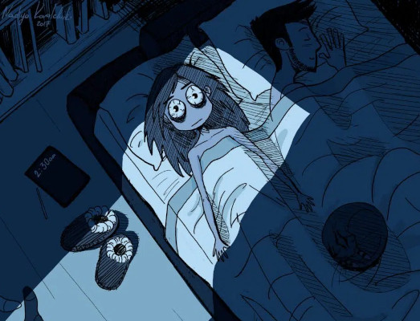

INSOMNIA

What is insomnia?
Insomnia is a sleep disorder and characterised as frequent difficulty in falling or staying asleep despite adequate opportunity for sleep and having bedroom environment conducive to restful sleep. It also results in impaired daytime functioning, such as sleepiness or difficulty concentrating.
The signs and symptoms of insomnia can be various from person to person, and largely depends on the type of the experienced insomnia. The two recognised types are:
- Short-term insomnia:
- • It can last for several days to weeks and is typically triggered by stress.
- Chronic insomnia:
- • It occurs at least 3 nights per week over at least 3 months.
- To summarise the symptoms!
If you have insomnia, you may experience: - • difficulty to fall asleep
- • lie awake for long periods at night
- • wake up several times during the night
- • wake up early in the morning and unable to get back to sleep
- • not feel refreshed when you get up
- • find it hard to nap during the day, despite feeling tired
- • feel tired and irritable during the day
- • have difficulty concentrating
- • lie awake for long periods at night
Also, it is essential to emphasise that insomnia is not equal with sleep deprivation when an individual does not give themselves enough sleeping time by decision or external factors. Although, these conditions are strongly related and have similar symptoms but they are not the same thing!
If you want to learn more about insomnia or other sleeping-related topics, Matthew Walker, a professor of neuroscience and psychology, has an extensive podcast that examines the matter. He also wrote several books about sleeping and was referred to as “The world’s No. 1 sleep expert.”
What could cause insomnia?
Insomnia can be caused by various factors, and there is no single main cause. However, research suggests that in many cases, it may result from certain types of physiological arousal at unwanted times, which disrupt normal sleep patterns.It means that the mind is constantly disrupted by unwanted factors and can not be turned off to enable relaxation, which is essential for falling asleep.
Apart from physiological factors, a person's family history, age, and gender may also contribute to their susceptibility to insomnia. Insomnia disorders are often found alongside mental health disorders such as depression and anxiety. It is believed that the underlying cause of insomnia may differ in people who have both insomnia and mental health conditions.
- Therefore, the trigger of insomnia can be associated with:
- • stress and anxiety
- • a poor sleeping environment – such as an uncomfortable bed, or a bedroom that’s too light, noisy, hot or cold
- • lifestyle factors – such as jet lag, shift work, or drinking alcohol or caffeine before going to bed
- • mental health conditions – such as depression and schizophrenia
- • physical health conditions – such as heart problems, other sleep disorders and long-term pain
- • certain medicines – such as some antidepressants, epilepsy medicines and steroid medication
- • a poor sleeping environment – such as an uncomfortable bed, or a bedroom that’s too light, noisy, hot or cold
How to handle insomnia?
Insomnia treatment depends on the duration of the sleep issues and any specific factors contributing to the sleep loss. If insomnia is associated with another condition (sleep apnea or depression), treating the other condition can often improve sleep.
For people with short-term insomnia, care may focus on discussing practices to support sleep hygiene. This could include managing environmental factors and changes in lifestyle and eating habits. If the individual's insomnia causes concerns, it could also result in a temporary prescription of some sleeping aids.
Several treatment options are available for people with insomnia that persists for weeks or months. According to studies and medical opinions, the most effective initial treatment for chronic insomnia is Cognitive Behavioral Therapy for Insomnia (CBT-I). CBT-I helps people manage anxiety related to their sleep issues and establish better sleep habits. If a person is experiencing significant symptoms from insomnia or CBT-I does not help, medication may be recommended to promote sleep. However, medication may also come with side effects, such as daytime drowsiness or confusion.
Another option is exploring alternative remedies such as yoga, hypnosis, dietary supplements (melatonin), or relaxation techniques to help turn off the mind from the reason of distress or anxiety. The usage of digital sound to put the mind at ease can be included in this category. Therefore, the introduced remedies only have recommendations, and the scientific evidence for their effectiveness is currently lacking. However, they are worth trying out as they could help to handle stress and anxiety in a balanced way that does not have any side effects.